Chemical Bistables
A bistable system is a dynamic system that has two stable equilibrium states. The following examples can be used to teach and demonstrate different aspects of bistable systems or to learn how to model them using moose. Each example contains a short description, the model's code, and the output with default settings.
Each example can be found as a python file within the main moose folder under
(...)/moose/moose-examples/tutorials/ChemicalBistables
In order to run the example, run the script
in command line, where filename.py is the name of the python file you would like to run. The filenames of each example are written in bold at the beginning of their respective sections, and the files themselves can be found in the aformentioned directory.
In chemical bistable models that use solvers, there are optional arguments that allow you to specify which solver you would like to use.
python filename.py [gsl | gssa | ee]
Where:
gsl: This is the Runge-Kutta-Fehlberg implementation from the GNU Scientific Library (GSL). It is a fifth order variable timestep explicit method. Works well for most reaction systems except if they have very stiff reactions.
gssl: Optimized Gillespie stochastic systems algorithm, custom implementation. This uses variable timesteps internally. Note that it slows down with increasing numbers of molecules in each pool. It also slows down, but not so badly, if the number of reactions goes up.
Exponential Euler:This methods computes the solution of partial and ordinary differential equations.
All the following examples can be run with either of the three solvers, each of which has different advantages and disadvantages and each of which might produce a slightly different outcome.
Simply running the file without the optional argument will by default use the gsl solver. These gsl outputs are the ones shown below.
Simple Bistables
Filename: simpleBis.py
This example shows the key property of a chemical bistable system: it
has two stable states. Here we start out with the system settling rather
quickly to the first stable state, where molecule A is high (blue) and
the complementary molecule B (green) is low. At t = 100s, we deliver a
perturbation, which is to move 90% of the A molecules into B. This
triggers a state flip, which settles into a distinct stable state where
there is more of B than of A. At t = 200s we reverse the flip by moving
99% of B molecules back to A.
If we run the simulation with the gssa option python simpleBis.py gssa
we see exactly the same sequence of events, except now the switch is
noisy. The calculations are now run with the Gillespie Stochastic
Systems Algorithm (gssa) which incorporates probabilistic reaction
events. The switch still switches but one can see that it might flip
spontaneously once in a while.
Things to do:
1. Open a copy of the script file in an editor, and around
line 124 and 129 you will see how the state flip is implemented while
maintaining mass conservation. What happens if you flip over fewer
molecules? What is the threshold for a successful flip? Why are these
thresholds different for the different states?
Try different volumes in line 31, and rerun using the gssa. Will you
see more or less noise if you increase the volume to 1e-20 m^3?
Code:
Show/Hide code
1#########################################################################
2## This program is part of 'MOOSE', the
3## Messaging Object Oriented Simulation Environment.
4## Copyright (C) 2013 Upinder S. Bhalla. and NCBS
5## It is made available under the terms of the
6## GNU Lesser General Public License version 2.1
7## See the file COPYING.LIB for the full notice.
8#########################################################################
9
10# This example illustrates how to set up a kinetic solver and kinetic model
11# using the scripting interface. Normally this would be done using the
12# Shell::doLoadModel command, and normally would be coordinated by the
13# SimManager as the base of the entire model.
14# This example creates a bistable model having two enzymes and a reaction.
15# One of the enzymes is autocatalytic.
16# The model is set up to run using deterministic integration.
17# If you pass in the argument 'gssa' it will run with the stochastic
18# solver instead
19# You may also find it interesting to change the volume.
20
21import math
22import pylab
23import numpy
24import moose
25import sys
26
27def makeModel():
28 # create container for model
29 model = moose.Neutral( 'model' )
30 compartment = moose.CubeMesh( '/model/compartment' )
31 compartment.volume = 1e-21 # m^3
32 # the mesh is created automatically by the compartment
33 mesh = moose.element( '/model/compartment/mesh' )
34
35 # create molecules and reactions
36 a = moose.Pool( '/model/compartment/a' )
37 b = moose.Pool( '/model/compartment/b' )
38 c = moose.Pool( '/model/compartment/c' )
39 enz1 = moose.Enz( '/model/compartment/b/enz1' )
40 enz2 = moose.Enz( '/model/compartment/c/enz2' )
41 cplx1 = moose.Pool( '/model/compartment/b/enz1/cplx' )
42 cplx2 = moose.Pool( '/model/compartment/c/enz2/cplx' )
43 reac = moose.Reac( '/model/compartment/reac' )
44
45 # connect them up for reactions
46 moose.connect( enz1, 'sub', a, 'reac' )
47 moose.connect( enz1, 'prd', b, 'reac' )
48 moose.connect( enz1, 'enz', b, 'reac' )
49 moose.connect( enz1, 'cplx', cplx1, 'reac' )
50
51 moose.connect( enz2, 'sub', b, 'reac' )
52 moose.connect( enz2, 'prd', a, 'reac' )
53 moose.connect( enz2, 'enz', c, 'reac' )
54 moose.connect( enz2, 'cplx', cplx2, 'reac' )
55
56 moose.connect( reac, 'sub', a, 'reac' )
57 moose.connect( reac, 'prd', b, 'reac' )
58
59 # connect them up to the compartment for volumes
60 #for x in ( a, b, c, cplx1, cplx2 ):
61 # moose.connect( x, 'mesh', mesh, 'mesh' )
62
63 # Assign parameters
64 a.concInit = 1
65 b.concInit = 0
66 c.concInit = 0.01
67 enz1.kcat = 0.4
68 enz1.Km = 4
69 enz2.kcat = 0.6
70 enz2.Km = 0.01
71 reac.Kf = 0.001
72 reac.Kb = 0.01
73
74 # Create the output tables
75 graphs = moose.Neutral( '/model/graphs' )
76 outputA = moose.Table ( '/model/graphs/concA' )
77 outputB = moose.Table ( '/model/graphs/concB' )
78
79 # connect up the tables
80 moose.connect( outputA, 'requestOut', a, 'getConc' );
81 moose.connect( outputB, 'requestOut', b, 'getConc' );
82
83 # Schedule the whole lot
84 moose.setClock( 4, 0.01 ) # for the computational objects
85 moose.setClock( 8, 1.0 ) # for the plots
86 # The wildcard uses # for single level, and ## for recursive.
87 moose.useClock( 4, '/model/compartment/##', 'process' )
88 moose.useClock( 8, '/model/graphs/#', 'process' )
89
90def displayPlots():
91 for x in moose.wildcardFind( '/model/graphs/conc#' ):
92 t = numpy.arange( 0, x.vector.size, 1 ) #sec
93 pylab.plot( t, x.vector, label=x.name )
94 pylab.legend()
95 pylab.show()
96
97def main():
98 solver = "gsl"
99 makeModel()
100 if ( len ( sys.argv ) == 2 ):
101 solver = sys.argv[1]
102 stoich = moose.Stoich( '/model/compartment/stoich' )
103 stoich.compartment = moose.element( '/model/compartment' )
104 if ( solver == 'gssa' ):
105 gsolve = moose.Gsolve( '/model/compartment/ksolve' )
106 stoich.ksolve = gsolve
107 else:
108 ksolve = moose.Ksolve( '/model/compartment/ksolve' )
109 stoich.ksolve = ksolve
110 stoich.path = "/model/compartment/##"
111 #solver.method = "rk5"
112 #mesh = moose.element( "/model/compartment/mesh" )
113 #moose.connect( mesh, "remesh", solver, "remesh" )
114 moose.setClock( 5, 1.0 ) # clock for the solver
115 moose.useClock( 5, '/model/compartment/ksolve', 'process' )
116
117 moose.reinit()
118 moose.start( 100.0 ) # Run the model for 100 seconds.
119
120 a = moose.element( '/model/compartment/a' )
121 b = moose.element( '/model/compartment/b' )
122
123 # move most molecules over to b
124 b.conc = b.conc + a.conc * 0.9
125 a.conc = a.conc * 0.1
126 moose.start( 100.0 ) # Run the model for 100 seconds.
127
128 # move most molecules back to a
129 a.conc = a.conc + b.conc * 0.99
130 b.conc = b.conc * 0.01
131 moose.start( 100.0 ) # Run the model for 100 seconds.
132
133 # Iterate through all plots, dump their contents to data.plot.
134 displayPlots()
135
136 quit()
137
138# Run the 'main' if this script is executed standalone.
139if __name__ == '__main__':
140 main()
Output:
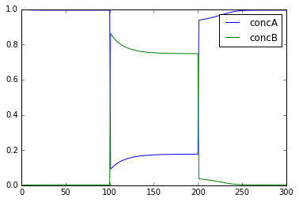
Scale Volumes
File name: scaleVolumes.py
This script runs exactly the same model as in simpleBis.py, but it
automatically scales the volumes from 1e-19 down to smaller values.
Note how the simulation successively becomes noisier, until at very
small volumes there are spontaneous state transitions.
Code:
Show/Hide code
1#########################################################################
2## This program is part of 'MOOSE', the
3## Messaging Object Oriented Simulation Environment.
4## Copyright (C) 2013 Upinder S. Bhalla. and NCBS
5## It is made available under the terms of the
6## GNU Lesser General Public License version 2.1
7## See the file COPYING.LIB for the full notice.
8#########################################################################
9
10import math
11import pylab
12import numpy
13import moose
14
15def makeModel():
16 # create container for model
17 model = moose.Neutral( 'model' )
18 compartment = moose.CubeMesh( '/model/compartment' )
19 compartment.volume = 1e-20
20 # the mesh is created automatically by the compartment
21 mesh = moose.element( '/model/compartment/mesh' )
22
23 # create molecules and reactions
24 a = moose.Pool( '/model/compartment/a' )
25 b = moose.Pool( '/model/compartment/b' )
26 c = moose.Pool( '/model/compartment/c' )
27 enz1 = moose.Enz( '/model/compartment/b/enz1' )
28 enz2 = moose.Enz( '/model/compartment/c/enz2' )
29 cplx1 = moose.Pool( '/model/compartment/b/enz1/cplx' )
30 cplx2 = moose.Pool( '/model/compartment/c/enz2/cplx' )
31 reac = moose.Reac( '/model/compartment/reac' )
32
33 # connect them up for reactions
34 moose.connect( enz1, 'sub', a, 'reac' )
35 moose.connect( enz1, 'prd', b, 'reac' )
36 moose.connect( enz1, 'enz', b, 'reac' )
37 moose.connect( enz1, 'cplx', cplx1, 'reac' )
38
39 moose.connect( enz2, 'sub', b, 'reac' )
40 moose.connect( enz2, 'prd', a, 'reac' )
41 moose.connect( enz2, 'enz', c, 'reac' )
42 moose.connect( enz2, 'cplx', cplx2, 'reac' )
43
44 moose.connect( reac, 'sub', a, 'reac' )
45 moose.connect( reac, 'prd', b, 'reac' )
46
47 # connect them up to the compartment for volumes
48 #for x in ( a, b, c, cplx1, cplx2 ):
49 # moose.connect( x, 'mesh', mesh, 'mesh' )
50
51 # Assign parameters
52 a.concInit = 1
53 b.concInit = 0
54 c.concInit = 0.01
55 enz1.kcat = 0.4
56 enz1.Km = 4
57 enz2.kcat = 0.6
58 enz2.Km = 0.01
59 reac.Kf = 0.001
60 reac.Kb = 0.01
61
62 # Create the output tables
63 graphs = moose.Neutral( '/model/graphs' )
64 outputA = moose.Table ( '/model/graphs/concA' )
65 outputB = moose.Table ( '/model/graphs/concB' )
66
67 # connect up the tables
68 moose.connect( outputA, 'requestOut', a, 'getConc' );
69 moose.connect( outputB, 'requestOut', b, 'getConc' );
70
71 # Schedule the whole lot
72 moose.setClock( 4, 0.01 ) # for the computational objects
73 moose.setClock( 8, 1.0 ) # for the plots
74 # The wildcard uses # for single level, and ## for recursive.
75 moose.useClock( 4, '/model/compartment/##', 'process' )
76 moose.useClock( 8, '/model/graphs/#', 'process' )
77
78def displayPlots():
79 for x in moose.wildcardFind( '/model/graphs/conc#' ):
80 t = numpy.arange( 0, x.vector.size, 1 ) #sec
81 pylab.plot( t, x.vector, label=x.name )
82
83def main():
84
85 """
86 This example illustrates how to run a model at different volumes.
87 The key line is just to set the volume of the compartment::
88
89 compt.volume = vol
90
91 If everything
92 else is set up correctly, then this change propagates through to all
93 reactions molecules.
94
95 For a deterministic reaction one would not see any change in output
96 concentrations.
97 For a stochastic reaction illustrated here, one sees the level of
98 'noise'
99 changing, even though the concentrations are similar up to a point.
100 This example creates a bistable model having two enzymes and a reaction.
101 One of the enzymes is autocatalytic.
102 This model is set up within the script rather than using an external
103 file.
104 The model is set up to run using the GSSA (Gillespie Stocahstic systems
105 algorithim) method in MOOSE.
106
107 To run the example, run the script
108
109 ``python scaleVolumes.py``
110
111 and close the plots every cycle to see the outcome of stochastic
112 calculations at ever smaller volumes, keeping concentrations the same.
113 """
114 makeModel()
115 moose.seed( 11111 )
116 gsolve = moose.Gsolve( '/model/compartment/gsolve' )
117 stoich = moose.Stoich( '/model/compartment/stoich' )
118 compt = moose.element( '/model/compartment' );
119 stoich.compartment = compt
120 stoich.ksolve = gsolve
121 stoich.path = "/model/compartment/##"
122 moose.setClock( 5, 1.0 ) # clock for the solver
123 moose.useClock( 5, '/model/compartment/gsolve', 'process' )
124 a = moose.element( '/model/compartment/a' )
125
126 for vol in ( 1e-19, 1e-20, 1e-21, 3e-22, 1e-22, 3e-23, 1e-23 ):
127 # Set the volume
128 compt.volume = vol
129 print('vol = {}, a.concInit = {}, a.nInit = {}'.format( vol, a.concInit, a.nInit))
130 print('Close graph to go to next plot\n')
131
132 moose.reinit()
133 moose.start( 100.0 ) # Run the model for 100 seconds.
134
135 a = moose.element( '/model/compartment/a' )
136 b = moose.element( '/model/compartment/b' )
137
138 # move most molecules over to b
139 b.conc = b.conc + a.conc * 0.9
140 a.conc = a.conc * 0.1
141 moose.start( 100.0 ) # Run the model for 100 seconds.
142
143 # move most molecules back to a
144 a.conc = a.conc + b.conc * 0.99
145 b.conc = b.conc * 0.01
146 moose.start( 100.0 ) # Run the model for 100 seconds.
147
148 # Iterate through all plots, dump their contents to data.plot.
149 displayPlots()
150 pylab.show()
151
152 quit()
153
154# Run the 'main' if this script is executed standalone.
155if __name__ == '__main__':
156 main()
Output:
vol = 1e-19, a.concInit = 1.0, a.nInit = 60221.415
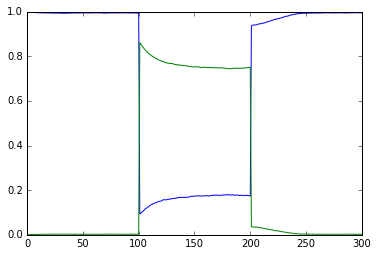
vol = 1e-20, a.concInit = 1.0, a.nInit = 6022.1415
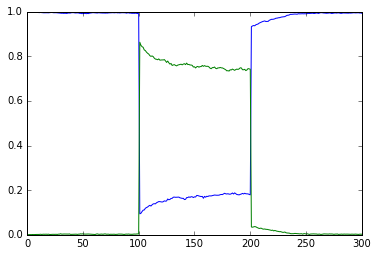
vol = 1e-21, a.concInit = 1.0, a.nInit = 602.21415
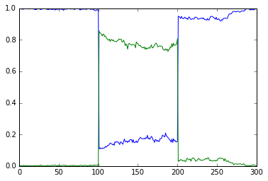
vol = 3e-22, a.concInit = 1.0, a.nInit = 180.664245
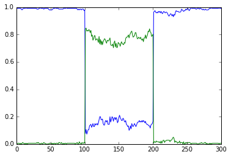
vol = 1e-22, a.concInit = 1.0, a.nInit = 60.221415
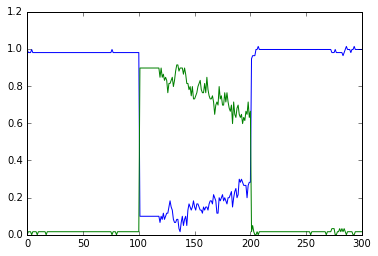
vol = 3e-23, a.concInit = 1.0, a.nInit = 18.0664245
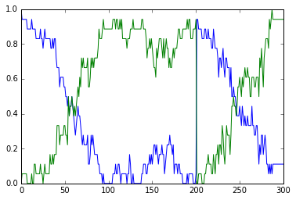
vol = 1e-23, a.concInit = 1.0, a.nInit = 6.0221415
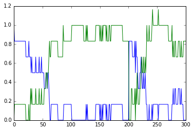
Strong Bistable System
File name: strongBis.py
This example illustrates a particularly strong, that is, parametrically
robust bistable system. The model topology is symmetric between
molecules b and c. We have both positive feedback of molecules
b and c onto themselves, and also inhibition of b by c
and vice versa.
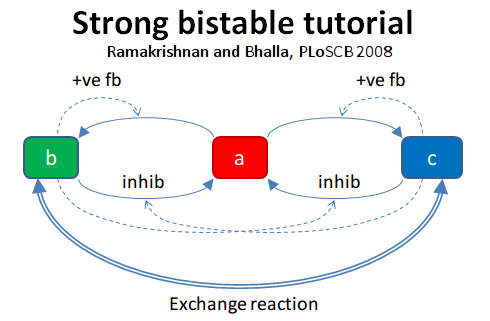
Open the python file to see what is happening. The simulation starts at
a symmetric point and the model settles at precisely the balance point
where a, b, and c are at the same concentration. At t= 100
we apply a small molecular 'tap' to push it over to a state where c
is larger. This is stable. At t = 210 we apply a moderate push to show
that it is now very stably in this state, and the system rebounds to its
original levels. At t = 320 we apply a strong push to take it over to a
state where b is larger. At t = 430 we give it a strong push to take
it back to the c dominant state.
Code:
Show/Hide code
1#########################################################################
2## This program is part of 'MOOSE', the
3## Messaging Object Oriented Simulation Environment.
4## Copyright (C) 2014 Upinder S. Bhalla. and NCBS
5## It is made available under the terms of the
6## GNU Lesser General Public License version 2.1
7## See the file COPYING.LIB for the full notice.
8#########################################################################
9
10import moose
11import matplotlib.pyplot as plt
12import matplotlib.image as mpimg
13import pylab
14import numpy
15import sys
16
17def main():
18
19 solver = "gsl" # Pick any of gsl, gssa, ee..
20 #solver = "gssa" # Pick any of gsl, gssa, ee..
21 #moose.seed( 1234 ) # Needed if stochastic.
22 mfile = '../../genesis/M1719.g'
23 runtime = 100.0
24 if ( len( sys.argv ) >= 2 ):
25 solver = sys.argv[1]
26 modelId = moose.loadModel( mfile, 'model', solver )
27 # Increase volume so that the stochastic solver gssa
28 # gives an interesting output
29 compt = moose.element( '/model/kinetics' )
30 compt.volume = 0.2e-19
31 r = moose.element( '/model/kinetics/equil' )
32
33 moose.reinit()
34 moose.start( runtime )
35 r.Kf *= 1.1 # small tap to break symmetry
36 moose.start( runtime/10 )
37 r.Kf = r.Kb
38 moose.start( runtime )
39
40 r.Kb *= 2.0 # Moderate push does not tip it back.
41 moose.start( runtime/10 )
42 r.Kb = r.Kf
43 moose.start( runtime )
44
45 r.Kb *= 5.0 # Strong push does tip it over
46 moose.start( runtime/10 )
47 r.Kb = r.Kf
48 moose.start( runtime )
49 r.Kf *= 5.0 # Strong push tips it back.
50 moose.start( runtime/10 )
51 r.Kf = r.Kb
52 moose.start( runtime )
53
54
55 # Display all plots.
56 img = mpimg.imread( 'strongBis.png' )
57 fig = plt.figure( figsize=(12, 10 ) )
58 png = fig.add_subplot( 211 )
59 imgplot = plt.imshow( img )
60 ax = fig.add_subplot( 212 )
61 x = moose.wildcardFind( '/model/#graphs/conc#/#' )
62 dt = moose.element( '/clock' ).tickDt[18]
63 t = numpy.arange( 0, x[0].vector.size, 1 ) * dt
64 ax.plot( t, x[0].vector, 'r-', label=x[0].name )
65 ax.plot( t, x[1].vector, 'g-', label=x[1].name )
66 ax.plot( t, x[2].vector, 'b-', label=x[2].name )
67 plt.ylabel( 'Conc (mM)' )
68 plt.xlabel( 'Time (seconds)' )
69 pylab.legend()
70 pylab.show()
71
72# Run the 'main' if this script is executed standalone.
73if __name__ == '__main__':
74 main()
Output:
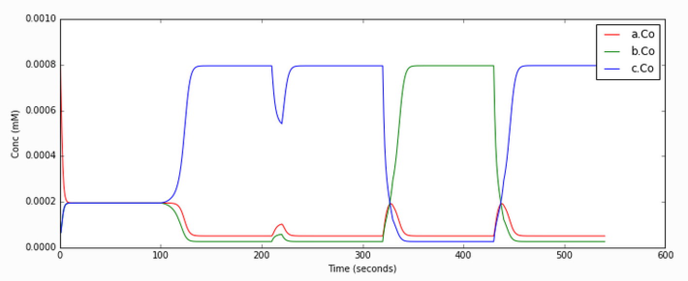
Propogation of a Bistable System
File name: propagationBis.py
All the above models have been well-mixed, that is point or non-spatial
models. Bistables do interesting things when they are dispersed in
space. This is illustrated in this example. Here we have a tapering
cylinder, that is a pseudo 1-dimensional reaction-diffusion system.
Every point in this cylinder has the bistable system from the strongBis
example.
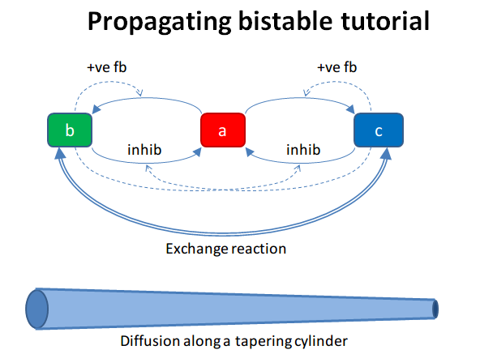
The example has two stages. First it starts out with the model in the
unstable transition point, and introduces a small symmetry-breaking
perturbation at one end. This rapidly propagates through the entire
length model, leaving molecule b at a higher value than c.
At t = 100 we carry out a different manipulation. We flip the
concentrations of molecules b and c for the left half of the model, and
then just let it run. Now we have opposing bistable states on either
half. In the middle, the two systems battle it out. Molecule c from
the left side diffuses over to the right, and tries to inhibit b,
and vice versa. However we have a small asymmetry due to the tapering of
the cylinder. As there is a slightly larger volume on the left, the
transition point gradually advances to the right, as molecule b
yields to the slightly larger amounts of molecule c.
Code:
Show/Hide code
1#########################################################################
2## This program is part of 'MOOSE', the
3## Messaging Object Oriented Simulation Environment.
4## Copyright (C) 2014 Upinder S. Bhalla. and NCBS
5## It is made available under the terms of the
6## GNU Lesser General Public License version 2.1
7## See the file COPYING.LIB for the full notice.
8#########################################################################
9
10"""
11This example illustrates propagation of state flips in a
12linear 1-dimensional reaction-diffusion system. It uses a
13bistable system loaded in from a kkit definition file, and
14places this in a tapering cylinder for pseudo 1-dimentionsional
15diffusion.
16
17This example illustrates a number of features of reaction-diffusion
18calculations.
19
20First, it shows how to set up such systems. Key steps are to create
21the compartment and define its voxelization, then create the Ksolve,
22Dsolve, and Stoich. Then we assign stoich.compartment, ksolve and
23dsolve in that order. Finally we assign the path of the Stoich.
24
25For running the model, we start by introducing
26a small symmetry-breaking increment of concInit
27of the molecule **b** in the last compartment on the cylinder. The model
28starts out with molecules at equal concentrations, so that the system would
29settle to the unstable fixed point. This symmetry breaking leads
30to the last compartment moving towards the state with an
31increased concentration of **b**,
32and this effect propagates to all other compartments.
33
34Once the model has settled to the state where **b** is high throughout,
35we simply exchange the concentrations of **b** with **c** in the left
36half of the cylinder. This introduces a brief transient at the junction,
37which soon settles to a smooth crossover.
38
39Finally, as we run the simulation, the tapering geometry comes into play.
40Since the left hand side has a larger diameter than the right, the
41state on the left gradually wins over and the transition point slowly
42moves to the right.
43
44"""
45
46import math
47import numpy
48import matplotlib.pyplot as plt
49import matplotlib.image as mpimg
50import moose
51import sys
52
53def makeModel():
54 # create container for model
55 r0 = 1e-6 # m
56 r1 = 0.5e-6 # m. Note taper.
57 num = 200
58 diffLength = 1e-6 # m
59 comptLength = num * diffLength # m
60 diffConst = 20e-12 # m^2/sec
61 concA = 1 # millimolar
62 diffDt = 0.02 # for the diffusion
63 chemDt = 0.2 # for the reaction
64 mfile = '../../genesis/M1719.g'
65
66 model = moose.Neutral( 'model' )
67 compartment = moose.CylMesh( '/model/kinetics' )
68
69 # load in model
70 modelId = moose.loadModel( mfile, '/model', 'ee' )
71 a = moose.element( '/model/kinetics/a' )
72 b = moose.element( '/model/kinetics/b' )
73 c = moose.element( '/model/kinetics/c' )
74
75 ac = a.concInit
76 bc = b.concInit
77 cc = c.concInit
78
79 compartment.r0 = r0
80 compartment.r1 = r1
81 compartment.x0 = 0
82 compartment.x1 = comptLength
83 compartment.diffLength = diffLength
84 assert( compartment.numDiffCompts == num )
85
86 # Assign parameters
87 for x in moose.wildcardFind( '/model/kinetics/##[ISA=PoolBase]' ):
88 #print 'pools: ', x, x.name
89 x.diffConst = diffConst
90
91 # Make solvers
92 ksolve = moose.Ksolve( '/model/kinetics/ksolve' )
93 dsolve = moose.Dsolve( '/model/dsolve' )
94 # Set up clocks.
95 moose.setClock( 10, diffDt )
96 for i in range( 11, 17 ):
97 moose.setClock( i, chemDt )
98
99 stoich = moose.Stoich( '/model/kinetics/stoich' )
100 stoich.compartment = compartment
101 stoich.ksolve = ksolve
102 stoich.dsolve = dsolve
103 stoich.path = "/model/kinetics/##"
104 print(('dsolve.numPools, num = ', dsolve.numPools, num))
105 b.vec[num-1].concInit *= 1.01 # Break symmetry.
106
107def main():
108 runtime = 100
109 displayInterval = 2
110 makeModel()
111 dsolve = moose.element( '/model/dsolve' )
112 moose.reinit()
113 #moose.start( runtime ) # Run the model for 10 seconds.
114
115 a = moose.element( '/model/kinetics/a' )
116 b = moose.element( '/model/kinetics/b' )
117 c = moose.element( '/model/kinetics/c' )
118
119 img = mpimg.imread( 'propBis.png' )
120 #imgplot = plt.imshow( img )
121 #plt.show()
122
123 plt.ion()
124 fig = plt.figure( figsize=(12,10) )
125 png = fig.add_subplot(211)
126 imgplot = plt.imshow( img )
127 ax = fig.add_subplot(212)
128 ax.set_ylim( 0, 0.001 )
129 plt.ylabel( 'Conc (mM)' )
130 plt.xlabel( 'Position along cylinder (microns)' )
131 pos = numpy.arange( 0, a.vec.conc.size, 1 )
132 line1, = ax.plot( pos, a.vec.conc, 'r-', label='a' )
133 line2, = ax.plot( pos, b.vec.conc, 'g-', label='b' )
134 line3, = ax.plot( pos, c.vec.conc, 'b-', label='c' )
135 timeLabel = plt.text(60, 0.0009, 'time = 0')
136 plt.legend()
137 fig.canvas.draw()
138
139 for t in range( displayInterval, runtime, displayInterval ):
140 moose.start( displayInterval )
141 line1.set_ydata( a.vec.conc )
142 line2.set_ydata( b.vec.conc )
143 line3.set_ydata( c.vec.conc )
144 timeLabel.set_text( "time = %d" % t )
145 fig.canvas.draw()
146
147 print('Swapping concs of b and c in half the cylinder')
148 for i in range( b.numData/2 ):
149 temp = b.vec[i].conc
150 b.vec[i].conc = c.vec[i].conc
151 c.vec[i].conc = temp
152
153 newruntime = 200
154 for t in range( displayInterval, newruntime, displayInterval ):
155 moose.start( displayInterval )
156 line1.set_ydata( a.vec.conc )
157 line2.set_ydata( b.vec.conc )
158 line3.set_ydata( c.vec.conc )
159 timeLabel.set_text( "time = %d" % (t + runtime) )
160 fig.canvas.draw()
161
162 print( "Hit 'enter' to exit" )
163 sys.stdin.read(1)
164
165
166
167# Run the 'main' if this script is executed standalone.
168if __name__ == '__main__':
169 main()
Output:
Steady-state Finder
File name: findSteadyState
This is an example of how to use an internal MOOSE solver to find steady
states of a system very rapidly. The method starts from a random
position in state space that obeys mass conservation. It then finds the
nearest steady state and reports it. If it does this enough times it
should find all the steady states.
We illustrate this process for 50 attempts to find the steady states. It
does find all of them. Each time it plots and prints the values, though
the plotting is not necessary.
The printout shows the concentrations of all molecules in the first 5
columns. Then it prints the type of solution, and the numbers of
negative and positive eigenvalues. In all cases the calculations are
successful, though it takes different numbers of iterations to arrive at
the steady state. In some models it would be necessary to put a cap on
the number of iterations, if the system is not able to find a steady
state.
In this example we run the bistable model using the ODE solver right at
the end, and manually enforce transitions to show where the target
steady states are.
For more information on the algorithm used, look in the comments within
the main method of the code below.
Code:
Show/Hide code
1#########################################################################
2## This program is part of 'MOOSE', the
3## Messaging Object Oriented Simulation Environment.
4## Copyright (C) 2013 Upinder S. Bhalla. and NCBS
5## It is made available under the terms of the
6## GNU Lesser General Public License version 2.1
7## See the file COPYING.LIB for the full notice.
8#########################################################################
9
10from __future__ import print_function
11
12import math
13import pylab
14import numpy
15import moose
16
17def main():
18 """
19 This example sets up the kinetic solver and steady-state finder, on
20 a bistable model of a chemical system. The model is set up within the
21 script.
22 The algorithm calls the steady-state finder 50 times with different
23 (randomized) initial conditions, as follows:
24
25 * Set up the random initial condition that fits the conservation laws
26 * Run for 2 seconds. This should not be mathematically necessary, but
27 for obscure numerical reasons it makes it much more likely that the
28 steady state solver will succeed in finding a state.
29 * Find the fixed point
30 * Print out the fixed point vector and various diagnostics.
31 * Run for 10 seconds. This is completely unnecessary, and is done here
32 just so that the resultant graph will show what kind of state has
33 been found.
34
35 After it does all this, the program runs for 100 more seconds on the
36 last found fixed point (which turns out to be a saddle node), then
37 is hard-switched in the script to the first attractor basin from which
38 it runs for another 100 seconds till it settles there, and then
39 is hard-switched yet again to the second attractor and runs for 400
40 seconds.
41
42 Looking at the output you will see many features of note:
43
44 * the first attractor (stable point) and the saddle point (unstable
45 fixed point) are both found quite often. But the second
46 attractor is found just once.
47 It has a very small basin of attraction.
48 * The values found for each of the fixed points match well with the
49 values found by running the system to steady-state at the end.
50 * There are a large number of failures to find a fixed point. These are
51 found and reported in the diagnostics. They show up on the plot
52 as cases where the 10-second runs are not flat.
53
54 If you wanted to find fixed points in a production model, you would
55 not need to do the 10-second runs, and you would need to eliminate the
56 cases where the state-finder failed. Then you could identify the good
57 points and keep track of how many of each were found.
58
59 There is no way to guarantee that all fixed points have been found
60 using this algorithm! If there are points in an obscure corner of state
61 space (as for the singleton second attractor convergence in this
62 example) you may have to iterate very many times to find them.
63
64 You may wish to sample concentration space logarithmically rather than
65 linearly.
66 """
67 compartment = makeModel()
68 ksolve = moose.Ksolve( '/model/compartment/ksolve' )
69 stoich = moose.Stoich( '/model/compartment/stoich' )
70 stoich.compartment = compartment
71 stoich.ksolve = ksolve
72 stoich.path = "/model/compartment/##"
73 state = moose.SteadyState( '/model/compartment/state' )
74
75 moose.reinit()
76 state.stoich = stoich
77 state.showMatrices()
78 state.convergenceCriterion = 1e-6
79 moose.seed( 111 ) # Used when generating the samples in state space
80
81 for i in range( 0, 50 ):
82 getState( ksolve, state )
83
84 # Now display the states of the system at more length to compare.
85 moose.start( 100.0 ) # Run the model for 100 seconds.
86
87 a = moose.element( '/model/compartment/a' )
88 b = moose.element( '/model/compartment/b' )
89
90 # move most molecules over to b
91 b.conc = b.conc + a.conc * 0.9
92 a.conc = a.conc * 0.1
93 moose.start( 100.0 ) # Run the model for 100 seconds.
94
95 # move most molecules back to a
96 a.conc = a.conc + b.conc * 0.99
97 b.conc = b.conc * 0.01
98 moose.start( 400.0 ) # Run the model for 200 seconds.
99
100 # Iterate through all plots, dump their contents to data.plot.
101 displayPlots()
102
103 quit()
104
105def makeModel():
106 """ This function creates a bistable reaction system using explicit
107 MOOSE calls rather than load from a file
108 """
109 # create container for model
110 model = moose.Neutral( 'model' )
111 compartment = moose.CubeMesh( '/model/compartment' )
112 compartment.volume = 1e-15
113 # the mesh is created automatically by the compartment
114 mesh = moose.element( '/model/compartment/mesh' )
115
116 # create molecules and reactions
117 a = moose.Pool( '/model/compartment/a' )
118 b = moose.Pool( '/model/compartment/b' )
119 c = moose.Pool( '/model/compartment/c' )
120 enz1 = moose.Enz( '/model/compartment/b/enz1' )
121 enz2 = moose.Enz( '/model/compartment/c/enz2' )
122 cplx1 = moose.Pool( '/model/compartment/b/enz1/cplx' )
123 cplx2 = moose.Pool( '/model/compartment/c/enz2/cplx' )
124 reac = moose.Reac( '/model/compartment/reac' )
125
126 # connect them up for reactions
127 moose.connect( enz1, 'sub', a, 'reac' )
128 moose.connect( enz1, 'prd', b, 'reac' )
129 moose.connect( enz1, 'enz', b, 'reac' )
130 moose.connect( enz1, 'cplx', cplx1, 'reac' )
131
132 moose.connect( enz2, 'sub', b, 'reac' )
133 moose.connect( enz2, 'prd', a, 'reac' )
134 moose.connect( enz2, 'enz', c, 'reac' )
135 moose.connect( enz2, 'cplx', cplx2, 'reac' )
136
137 moose.connect( reac, 'sub', a, 'reac' )
138 moose.connect( reac, 'prd', b, 'reac' )
139
140 # Assign parameters
141 a.concInit = 1
142 b.concInit = 0
143 c.concInit = 0.01
144 enz1.kcat = 0.4
145 enz1.Km = 4
146 enz2.kcat = 0.6
147 enz2.Km = 0.01
148 reac.Kf = 0.001
149 reac.Kb = 0.01
150
151 # Create the output tables
152 graphs = moose.Neutral( '/model/graphs' )
153 outputA = moose.Table2 ( '/model/graphs/concA' )
154 outputB = moose.Table2 ( '/model/graphs/concB' )
155 outputC = moose.Table2 ( '/model/graphs/concC' )
156 outputCplx1 = moose.Table2 ( '/model/graphs/concCplx1' )
157 outputCplx2 = moose.Table2 ( '/model/graphs/concCplx2' )
158
159 # connect up the tables
160 moose.connect( outputA, 'requestOut', a, 'getConc' );
161 moose.connect( outputB, 'requestOut', b, 'getConc' );
162 moose.connect( outputC, 'requestOut', c, 'getConc' );
163 moose.connect( outputCplx1, 'requestOut', cplx1, 'getConc' );
164 moose.connect( outputCplx2, 'requestOut', cplx2, 'getConc' );
165
166 return compartment
167
168def displayPlots():
169 for x in moose.wildcardFind( '/model/graphs/conc#' ):
170 t = numpy.arange( 0, x.vector.size, 1 ) #sec
171 pylab.plot( t, x.vector, label=x.name )
172 pylab.legend()
173 pylab.show()
174
175def getState( ksolve, state ):
176 """ This function finds a steady state starting from a random
177 initial condition that is consistent with the stoichiometry rules
178 and the original model concentrations.
179 """
180 scale = 1.0 / ( 1e-15 * 6.022e23 )
181 state.randomInit() # Randomize init conditions, subject to stoichiometry
182 moose.start( 2.0 ) # Run the model for 2 seconds.
183 state.settle() # This function finds the steady states.
184 for x in ksolve.nVec[0]:
185 print( "{:.2f}".format( x * scale ), end=' ')
186
187 print( "Type={} NegEig={} PosEig={} status={} {} Iter={:2d}".format( state.stateType, state.nNegEigenvalues, state.nPosEigenvalues, state.solutionStatus, state.status, state.nIter))
188 moose.start( 10.0 ) # Run model for 10 seconds, just for display
189
190
191# Run the 'main' if this script is executed standalone.
192if __name__ == '__main__':
193 main()
Output:
0.92 0.05 0.00 0.01 0.01 Type=2 NegEig=2 PosEig=1 status=0 success Iter=16
0.92 0.05 0.00 0.01 0.01 Type=2 NegEig=2 PosEig=1 status=0 success Iter=29
0.18 0.75 0.00 0.03 0.01 Type=0 NegEig=3 PosEig=0 status=0 success Iter=10
0.18 0.75 0.00 0.03 0.01 Type=0 NegEig=3 PosEig=0 status=0 success Iter=26
0.18 0.75 0.00 0.03 0.01 Type=0 NegEig=3 PosEig=0 status=0 success Iter=27
0.92 0.05 0.00 0.01 0.01 Type=2 NegEig=2 PosEig=1 status=0 success Iter=30
0.18 0.75 0.00 0.03 0.01 Type=0 NegEig=3 PosEig=0 status=0 success Iter=12
0.92 0.05 0.00 0.01 0.01 Type=2 NegEig=2 PosEig=1 status=0 success Iter=29
0.18 0.75 0.00 0.03 0.01 Type=0 NegEig=3 PosEig=0 status=0 success Iter=12
0.92 0.05 0.00 0.01 0.01 Type=2 NegEig=2 PosEig=1 status=0 success Iter=41
0.18 0.75 0.00 0.03 0.01 Type=0 NegEig=3 PosEig=0 status=0 success Iter=29
0.18 0.75 0.00 0.03 0.01 Type=0 NegEig=3 PosEig=0 status=0 success Iter=18
0.18 0.75 0.00 0.03 0.01 Type=0 NegEig=3 PosEig=0 status=0 success Iter=27
0.18 0.75 0.00 0.03 0.01 Type=0 NegEig=3 PosEig=0 status=0 success Iter=14
0.18 0.75 0.00 0.03 0.01 Type=0 NegEig=3 PosEig=0 status=0 success Iter=12
0.18 0.75 0.00 0.03 0.01 Type=0 NegEig=3 PosEig=0 status=0 success Iter=19
0.18 0.75 0.00 0.03 0.01 Type=0 NegEig=3 PosEig=0 status=0 success Iter= 6
0.18 0.75 0.00 0.03 0.01 Type=0 NegEig=3 PosEig=0 status=0 success Iter=14
0.18 0.75 0.00 0.03 0.01 Type=0 NegEig=3 PosEig=0 status=0 success Iter=23
0.18 0.75 0.00 0.03 0.01 Type=0 NegEig=3 PosEig=0 status=0 success Iter=25
0.18 0.75 0.00 0.03 0.01 Type=0 NegEig=3 PosEig=0 status=0 success Iter=16
0.18 0.75 0.00 0.03 0.01 Type=0 NegEig=3 PosEig=0 status=0 success Iter= 5
0.92 0.05 0.00 0.01 0.01 Type=2 NegEig=2 PosEig=1 status=0 success Iter=43
0.92 0.05 0.00 0.01 0.01 Type=2 NegEig=2 PosEig=1 status=0 success Iter= 9
0.92 0.05 0.00 0.01 0.01 Type=2 NegEig=2 PosEig=1 status=0 success Iter=43
0.92 0.05 0.00 0.01 0.01 Type=2 NegEig=2 PosEig=1 status=0 success Iter=29
0.18 0.75 0.00 0.03 0.01 Type=0 NegEig=3 PosEig=0 status=0 success Iter=27
0.18 0.75 0.00 0.03 0.01 Type=0 NegEig=3 PosEig=0 status=0 success Iter= 9
0.18 0.75 0.00 0.03 0.01 Type=0 NegEig=3 PosEig=0 status=0 success Iter=12
0.92 0.05 0.00 0.01 0.01 Type=2 NegEig=2 PosEig=1 status=0 success Iter=24
0.92 0.05 0.00 0.01 0.01 Type=2 NegEig=2 PosEig=1 status=0 success Iter=26
0.18 0.75 0.00 0.03 0.01 Type=0 NegEig=3 PosEig=0 status=0 success Iter=14
0.92 0.05 0.00 0.01 0.01 Type=2 NegEig=2 PosEig=1 status=0 success Iter=14
0.18 0.75 0.00 0.03 0.01 Type=0 NegEig=3 PosEig=0 status=0 success Iter=10
0.18 0.75 0.00 0.03 0.01 Type=0 NegEig=3 PosEig=0 status=0 success Iter=13
0.18 0.75 0.00 0.03 0.01 Type=0 NegEig=3 PosEig=0 status=0 success Iter=26
0.18 0.75 0.00 0.03 0.01 Type=0 NegEig=3 PosEig=0 status=0 success Iter=21
0.18 0.75 0.00 0.03 0.01 Type=0 NegEig=3 PosEig=0 status=0 success Iter=26
0.18 0.75 0.00 0.03 0.01 Type=0 NegEig=3 PosEig=0 status=0 success Iter=24
0.18 0.75 0.00 0.03 0.01 Type=0 NegEig=3 PosEig=0 status=0 success Iter=24
0.92 0.05 0.00 0.01 0.01 Type=2 NegEig=2 PosEig=1 status=0 success Iter=18
0.18 0.75 0.00 0.03 0.01 Type=0 NegEig=3 PosEig=0 status=0 success Iter=26
0.18 0.75 0.00 0.03 0.01 Type=5 NegEig=4 PosEig=0 status=0 success Iter=13
0.18 0.75 0.00 0.03 0.01 Type=0 NegEig=3 PosEig=0 status=0 success Iter=23
0.92 0.05 0.00 0.01 0.01 Type=2 NegEig=2 PosEig=1 status=0 success Iter=24
0.18 0.75 0.00 0.03 0.01 Type=0 NegEig=3 PosEig=0 status=0 success Iter= 8
0.18 0.75 0.00 0.03 0.01 Type=0 NegEig=3 PosEig=0 status=0 success Iter=18
0.18 0.75 0.00 0.03 0.01 Type=0 NegEig=3 PosEig=1 status=0 success Iter=21
0.99 0.00 0.01 0.00 0.00 Type=0 NegEig=3 PosEig=0 status=0 success Iter=15
0.92 0.05 0.00 0.01 0.01 Type=2 NegEig=2 PosEig=1 status=0 success Iter=29
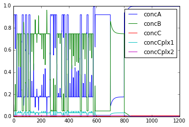